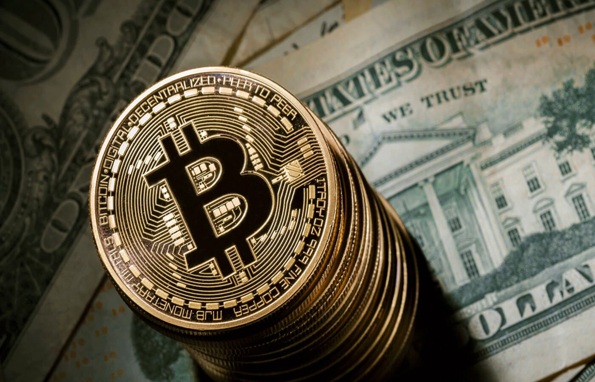
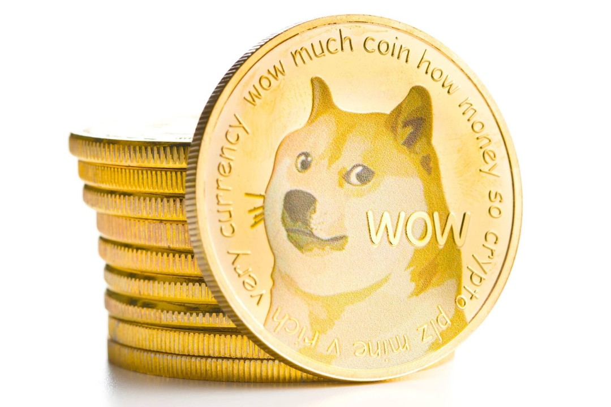
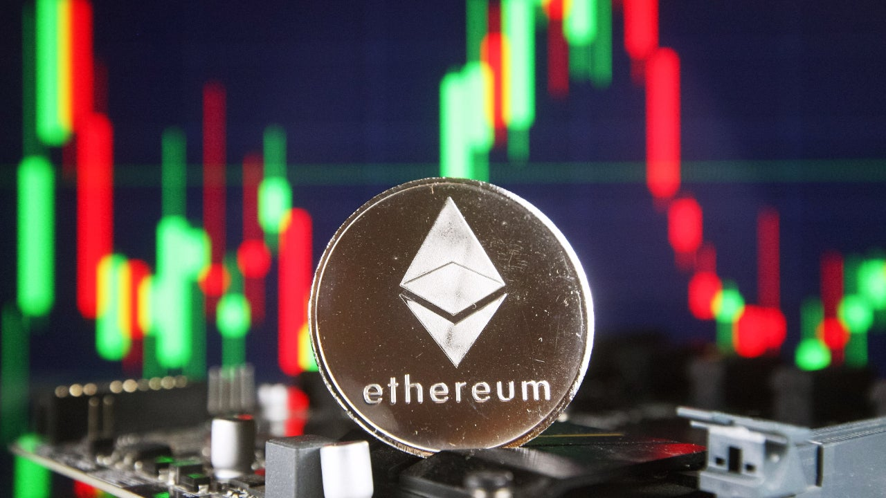

by Rye Deinla
| Bitcoin | Description | |
|---|---|---|
|  | Bitcoin is the first and probably the most popular crypto-currency in the world, which was created in 2009, but got popularized in 2017. It is a decentralized and completely digital currency that is powered by "blockchain" technology, which is a database controlled by multiple computers. |
| Dogecoin | Description | |
|---|---|---|
|  | Dogecoin is a peer-to-peer, open-source crypto-currency launched in December 2013 by Jackson Palmer and Billy Markus. The logo is of a dog called a Shiba Inu named Kabosu. It uses the Scrypt algorithm and is known for its low price and unlimited supply. |
| Ethereum | Description | |
|---|---|---|
|  | Ethereum is the product of 8 co-founders in 2015, which operates as a decentralized computer network. The currency itself is nearly autonomous. |